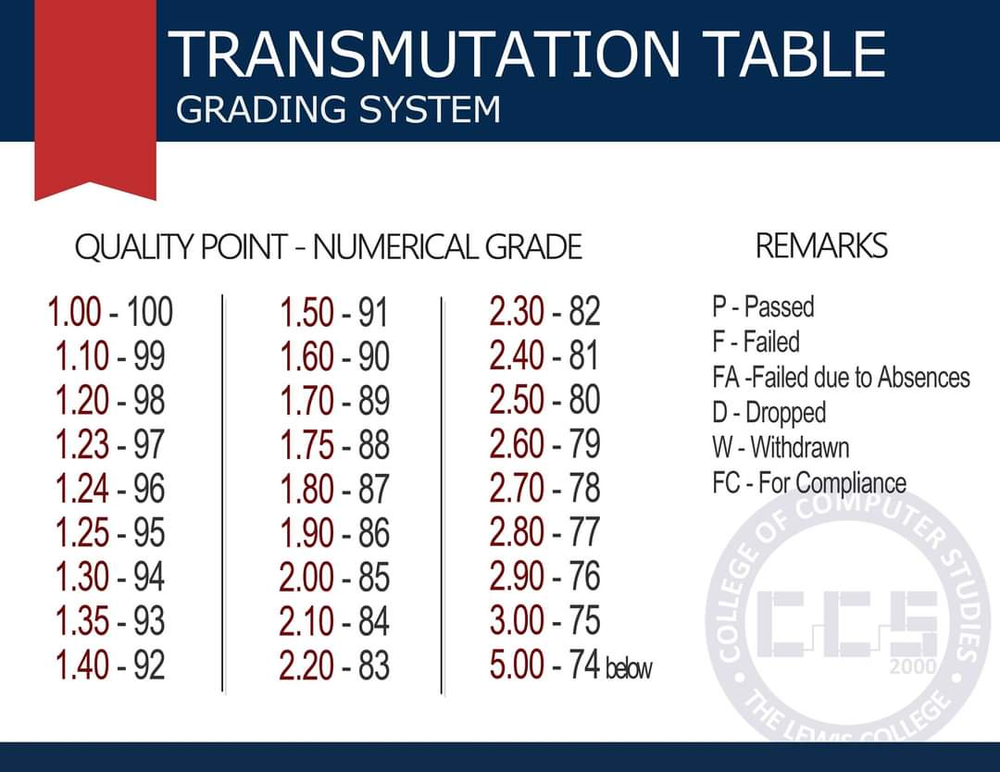

Computer Programming 1
Topic 00 · Course Introduction
What This Topic Covers
- Meet your instructor and know how to reach them.
- Understand the course description and what you'll be able to do by the end.
- Know exactly how your grade is computed.
- Preview the full topic roadmap for the term.
- Agree on the classroom rules that keep this a good learning space.
Course Instructor
Here's who will be guiding you through Programming 1, and how to reach them.
Jerico E. Hita
- Jerico E. Hita — College of Computer Studies, CCS Instructor / Programmer.
- Email: jericohita@thelewiscollege.edu.ph
- FB Messenger: Jerico Hita
Course Description
What this course is really about, in one paragraph.
- Design: Plan a solution before writing any code (this is exactly why Topic 06 covers flowcharts).
- Implement: Turn that plan into working Python code.
- Test: Run your program with different inputs to see if it behaves correctly.
- Debug: Find and fix the inevitable mistakes along the way.
Grading System
Here's exactly how your final grade for this course is calculated.
| Component | Weight |
|---|---|
| Attendance and GMRC | 5% |
| Class Participation | 10% |
| Laboratory Exercises | 15% |
| Machine Problems | 30% |
| Major Examinations | 40% |
| Period | Formula |
|---|---|
| 1st Half | Prelim (30%) + Midterm (70%) |
| 2nd Half | Prefinals (30%) + Finals (70%) |
| Final Grade | (1st Half × 40%) + (2nd Half × 60%) |
Transmutation Table
Use this table to convert a quality point (GPA) into its equivalent numerical grade.

Course Topics
Here's everything we'll cover this term, from computer basics to saving data in files.
Classroom Rules
A good classroom is a shared responsibility — here's what's expected of everyone.
- Respect Everyone: Be kind and polite to classmates, teachers, and school property.
- Be On Time: Arrive before class starts and be prepared with necessary materials.
- Listen When Others Are Speaking: Raise your hand to speak and wait for your turn.
- Stay on Task: Focus during lessons and avoid distractions.
- Follow Instructions: Listen carefully and follow directions from the teacher.
- No Cell Phones During Class: Unless allowed for learning activities.
- Clean As You Go: Keep your area neat and help maintain a clean classroom.
- Be Honest: No cheating, lying, or plagiarism.
- Ask for Help When Needed: Don't hesitate to seek assistance from the teacher.
- Have a Positive Attitude: Encourage others and always try your best.
Don't chase easy tasks when studying. Choose the hard ones—they teach you more. — A note to keep in mind this term
Did That Stick?
A quick self-check before we dive into Topic 01. Guess, then reveal the answer.
A Which single component carries the most weight in your grade?
B How is your Final Grade calculated?
C What's the very first topic we cover after this orientation?
Any Questions?
If anything about the instructor, grading, topics, or classroom rules is unclear, now's the time to ask.
Coming Up Next: Topic 01
Basic Computer Structure — hardware, software, the CPU, memory, and how input becomes output.